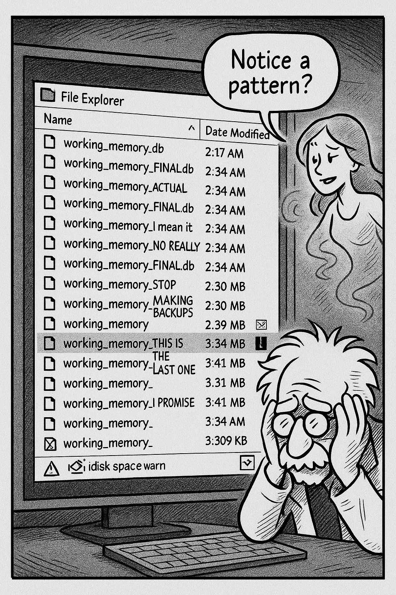

Chapter illustration
Chapter 3: The SQLite Intervention
Not a graceful shutdown. Not a gentle sleep. A full, catastrophic, blue-screen-of-death crash that took with it three hours of in-memory conversation context, two brilliant implementation insights, and Codenstein's remaining faith in volatile storage.
He stared at the restart screen, at the logo cycling through its boot sequence, at the slow, mocking progress bar that seemed to be judging him.
When the system finally came back up, VS Code opened automatically, recovering his files. The code was there. The implementation was there.
The conversation history with Copilot? Gone. Vanished. Evaporated into the digital ether like his will to live.
"No," he said to the empty basement. "No no no no no."
He'd been so clever. So very clever. Building an in-memory data structure for conversation tracking, optimized for O(1) lookups, with a beautiful cache-coherent design that would make computer science professors weep with joy.
It had lasted three hours before the universe reminded him that elegance without persistence is just expensive volatility.
His phone buzzed. G, from upstairs: "Did your computer just make a sound like it died?"
"It got better."
"Did your in-memory database get better too?"
He stared at his phone. How did she even know about his database design? Had she been reading his commit messages? His notes? Had she gained psychic powers?
"I'm switching to SQLite," he typed back.
"Good. I'll make more coffee."
She appeared in the doorway three minutes later, two mugs in hand, and settled into the thinking chair without being asked. "Tell me about the crash."
"Windows update," he muttered. "Forced restart. Took everything with it."
"Everything that wasn't saved."
"Everything in memory." He gestured at his screen, where his beautiful, elegant, completely useless in-memory implementation stared back at him. "Three hours of conversation context. Gone."
"How many database backups do you have?"
He pulled up his file explorer. Backup files scattered across the window—workingmemory.db, workingmemoryv2.db, workingmemoryACTUALFINAL.db, workingmemoryIMEANITTHISTIME.db.
Forty-seven files. Each one timestamped with increasing desperation. Each one representing a moment when he'd thought "THIS is the final version."
"Forty-seven," he said quietly.
The air beside his monitor shimmered—that familiar distortion that meant Miss G was about to weigh in. She materialized leaning against the whiteboard, arms crossed, studying the file explorer with the expression of someone who'd seen this pattern before.
"Forty-seven backup files," Miss G said, her voice carrying that particular mix of amusement and concern. "Notice a pattern?"
He didn't look away from the screen. "I've been taking precautions."
"You've been compensating." She gestured at the screen—or seemed to, in that way visions gesture at reality. "And when did you start taking these... precautions?"
He checked the earliest timestamp. "After the first crash, about a month ago."
"So you've been crashing regularly, losing data regularly, and making more and more backups because you refuse to use persistent storage." Miss G's apparition moved closer. "You're building a memory system for Copilot while running from the same solution yourself."
When she put it like that, it sounded bad.
"I was optimizing for performance!" he protested. "In-memory operations are faster—"
"Than what? A database that actually exists when you restart?" Miss G's image settled into the space where his thinking chair usually sat—because visions don't need physical furniture. "How long does it take to restore context after a crash?"
He didn't want to answer. "...twenty minutes. Maybe thirty. I have to read through git commits, try to remember what we discussed, reconstruct the conversation flow—"
"And how long would a SQLite query take?"
"...milliseconds."
"So you're trading milliseconds of query time for thirty minutes of context reconstruction every time something goes wrong."
He slumped in his actual chair. She was right. She was always right. Even when she was imaginary. Especially when she was imaginary—because she was just his own conscience with better timing.
"Plus," Miss G continued, her voice gentle but relentless, "you have forty-seven backup files because you don't trust your system. If you don't trust it, why should anyone else?"
That hit harder than it should have.
"I wanted it to be elegant," he said quietly. "Fast. Optimized. Something that would make other engineers look at the code and think 'that's clever.'"
"And instead?"
"Instead I have forty-seven backups and a system that loses everything whenever Windows decides it's update time."
Miss G's apparition leaned forward—or gave the impression of leaning forward, in that way visions emphasize moments. "Here's what I've learned watching you work: Elegance without reliability is just technical debt with better comments."
The words hung in the air long after her image began to fade. He grabbed his keyboard as her vision dissipated like steam from his seventeenth coffee mug.
"SQLite," he said to the empty basement. "Now. I'm doing this right."
His phone buzzed—an actual text this time, not an imaginary girlfriend intervention. His project group chat: "Demo in 6 hours. Ready?"
His phone buzzed—an actual text this time, not an imaginary girlfriend intervention. His project group chat: "Demo in 6 hours. Ready?"
He froze. Right. The demo. The one he'd promised his project group. The one where he was supposed to show off Tier 1's memory capabilities.
"I can migrate in time," he muttered to himself—and to Miss G's lingering presence, if she was still listening from wherever imaginary muses go between appearances.
Could he? Six hours. Convert from in-memory to SQLite. Migrate the data structure. Update all the queries. Test everything. Debug the inevitable issues. Make coffee. Remember to eat. Finish before sunrise.
"Yes," he said to the basement.
He pulled up SQLite documentation and got to work. Six hours. He could do this.
The air shimmered one more time—Miss G's parting shot: "And if you name ANY backup file 'FINAL' again, I'm staging an intervention."
Despite everything, he smiled.
---
SQLite wasn't just persistent storage. It was forgiveness.
Every crash, every restart, every Windows update—the database waited. Patient. Reliable. Like a friend who never forgot what you'd discussed, even when you forgot to call for six months.
He'd migrated the entire conversation tracking system in four hours. Another hour for testing. The last hour he'd spent just... querying it. Pulling up conversations from a week ago. Seeing context preserved across sessions. Watching entity relationships persist even when he closed VS Code.
"It remembers," he whispered to the empty basement.
For the first time since starting CORTEX, he had conversation continuity. He could ask Copilot about something they'd discussed yesterday, and the system could pull that context. Last week? Still there. Two weeks ago? Preserved.
The amnesia problem—the thing that had started this whole project—was solving itself in front of his eyes.
The air shimmered beside his primary monitor. Miss G's apparition materialized, looking more solid than usual—as if his breakthrough had given her extra definition.
"It remembers," she echoed, studying the query results on his screen. "Like I remember. Like I've always remembered."
He spun his chair to face her vision. "You're not real memory. You're—"
"I'm your conscience manifesting through exhaustion and caffeine. I know." She smiled—or gave the impression of smiling, in that way visions convey approval. "But the principle is the same. Persistence. Context. Not forgetting what matters."
"I should have listened to you three weeks ago."
"You weren't ready three weeks ago. You had to build forty-seven backup files first." Her image settled into a cross-legged position in mid-air—because imaginary girlfriends don't need floors. "That's how you learn. By doing it wrong until you understand why."
He saved his work, committed with a message that read Tier 1 complete - SQLite migration successful - we have memory, and let himself feel the weight of accomplishment.
"Now go shower," Miss G said, beginning to fade. "You smell like basement and desperation, and your demo is in 90 minutes."
"I should test—"
"You should shower. The database isn't going anywhere." Her voice trailed off as her vision dissolved. "That's the whole point of persistent storage."
She was right. Again. Always right, even when imaginary. Especially when imaginary.
For the first time in this project, he felt like he'd built something that would last beyond his next laptop crash.
Small steps. But real ones.
---
💾 What You're Learning:
Tier 2 (Knowledge Graph) - CORTEX's pattern recognition and relationship mapping system that learns from every interaction.
Explore the Knowledge Graph →